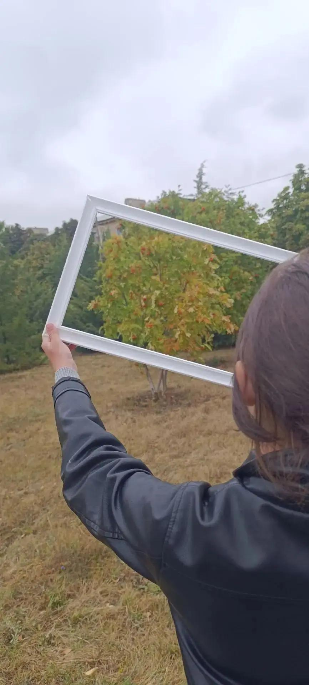

Блок 5. Учебник под партой, небо над головой
Психологическое благополучие и здоровье школьников
Каждый учитель младших классов знает это время: после третьего урока глаза у детей устают, движения становятся беспокойными, и никакая строгость не помогает. Первокласснику движение нужно, как воздух, — и это не каприз, а природа возраста.
Обновлённые ФГОС НОО прямо заботятся о здоровье школьников: подвижные перемены, динамические паузы, оптимальный режим нагрузки — обязательная часть образовательного процесса. Федеральные рабочие программы дают для этого пространство. Я пошла дальше и стала выводить часть уроков за стены класса — так появились наши «зелёные уроки».
- 🌳 Окружающий мир — в парке: измеряем тень по времени суток, находим признаки осени, ведём «паспорт дерева».
- 📐 Математика — на пришкольном участке: длина шага, периметр клумбы, скорость ходьбы.
- 📖 Литературное чтение — подлинное: стихи о природе мы читаем там, где сама природа их написала.

Движение при этом не мешает учёбе — оно её поддерживает: свежий воздух возвращает классу внимание лучше любой физкультминутки.
Сегодня «зелёные уроки» — часть расписания, а не награда за хорошее поведение. Я убеждена: ребёнок, который полдня сидит за партой, редко виноват в своей усталости — виновата среда. И лучше менять среду, чем характер ребёнка.
«Учебник под партой, небо над головой» — для меня это не красивый образ, а рабочая педагогика. Нить моей династии тянется туда, где когда-то учились наши бабушки, — под открытым небом. Кажется, нить сделала круг и вернулась домой.
↑ наверх ← На главную